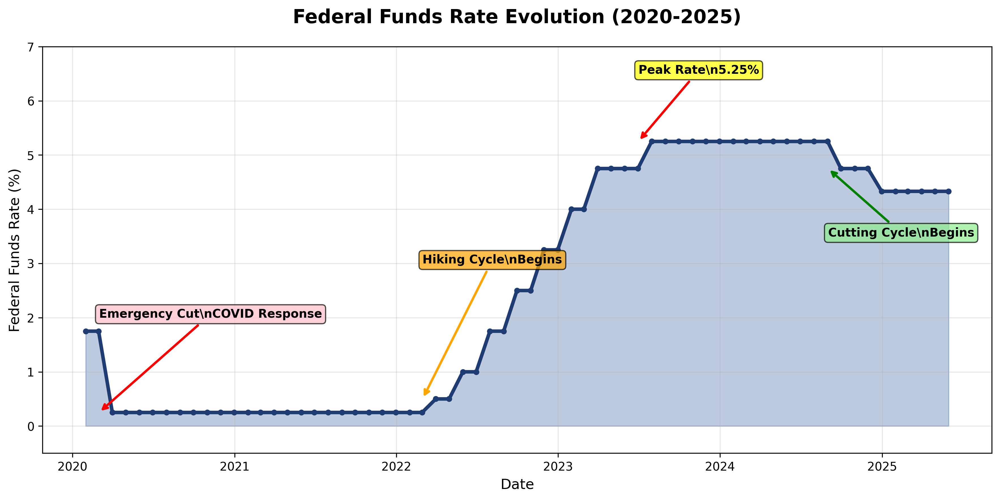
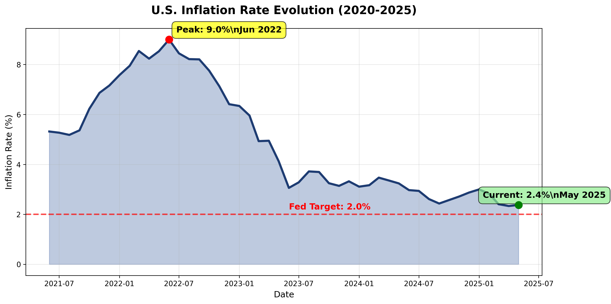

Analysis Period: 2020 - 2025
Report Date: June 29, 2025
Comprehensive review of monetary policy evolution
2020-2021
Characteristics:
2022-2023
Characteristics:
2024-2025
Characteristics:

| Date | Rate Decision | New Rate | Change | Rationale |
|---|---|---|---|---|
| Mar 2020 | Emergency Cut | 0.00-0.25% | -150bp | COVID Response |
| Mar 2022 | Liftoff | 0.25-0.50% | +25bp | Inflation Concerns |
| Jul 2023 | Peak Rate | 5.25-5.50% | +25bp | Maximum Tightening |
| Sep 2024 | First Cut | 4.75-5.00% | -50bp | Mission Accomplished |
| Jun 2025 | Current | 4.25-4.50% | -25bp | Continued Normalization |
2020-2022
$4.7 trillion expansion
April 2022
Maximum balance sheet
2022-Present
$2.24 trillion reduction

| Period | Peak Inflation | Fed Response | Current Status |
|---|---|---|---|
| 2021 Q4 | 6.8% | "Transitory" assessment | Policy lag recognized |
| 2022 Q2 | 9.0% | Aggressive hiking begins | Peak inflation reached |
| 2023 Q4 | 3.1% | Pause in hiking | Clear deceleration |
| 2024 Q4 | 2.6% | Cutting cycle begins | Near target achieved |
| 2025 Q2 | 2.4% | Continued normalization | Target within reach |
Peak unemployment
Below pre-pandemic
Gradual rebalancing
| Indicator | Pre-Pandemic | Crisis Low/High | Current | Fed Target |
|---|---|---|---|---|
| Unemployment Rate | 3.5% | 14.8% | 4.2% | ~4.0% |
| Core Inflation | 2.3% | 6.6% | 2.4% | 2.0% |
| Job Openings | 7.0M | 11.9M | 8.1M | ~7.5M |
| Wage Growth | 3.0% | 5.6% | 3.8% | ~3.5% |
| Asset Class | QE Period (2020-2022) |
Tightening (2022-2024) |
Cutting Cycle (2024-2025) |
|---|---|---|---|
| S&P 500 | +60% rally | -20% decline | +25% recovery |
| 10-Year Treasury | 0.5% → 1.7% | 1.7% → 5.0% | 5.0% → 4.2% |
| Corporate Credit | Spreads compressed | Spreads widened | Spreads normalizing |
| USD Index | Weakened | Strengthened | Stabilizing |
| Real Estate | Boom period | Sharp correction | Gradual recovery |
2-10s spread: +150bp
2-10s spread: -100bp
2-10s spread: +56bp
| Period | DXY Level | Change | Driver |
|---|---|---|---|
| QE Era (2020-2022) | 90-95 | Weakness | Ultra-low rates |
| Hiking Cycle (2022-2024) | 95-115 | +20% | Rate differential |
| Cutting Cycle (2024-2025) | 115-105 | -10% | Peak rates passed |
| Scenario | Probability | Policy Response | Market Impact |
|---|---|---|---|
| Soft Landing (Base) | 60% | Gradual cuts to neutral | Balanced market performance |
| Economic Slowdown | 25% | Accelerated cutting cycle | Bond rally, equity volatility |
| Inflation Resurgence | 15% | Pause or reverse cuts | Rate volatility, curve flatten |
For Investors: Policy normalization creates opportunities for balanced portfolio construction with focus on quality and duration management.